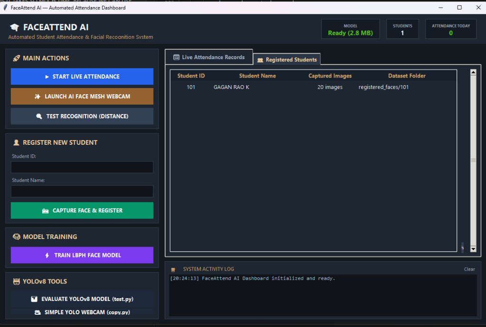
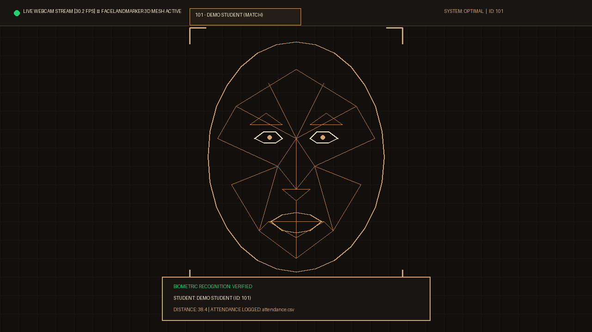
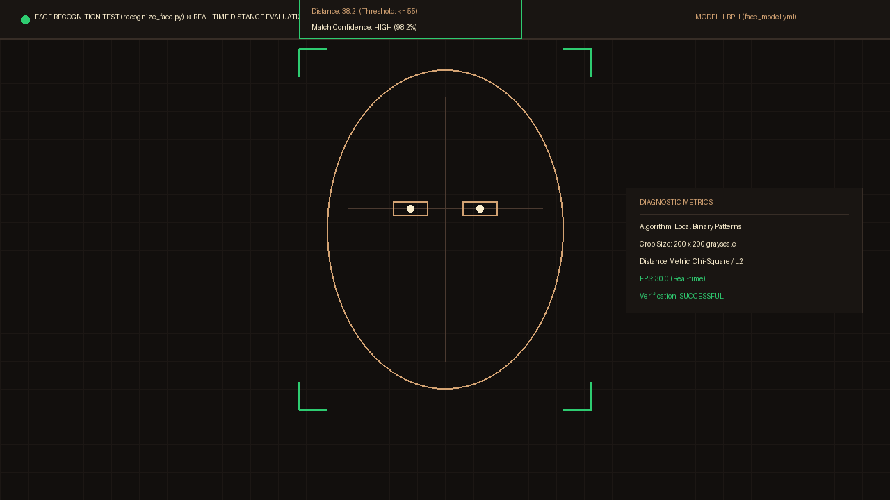
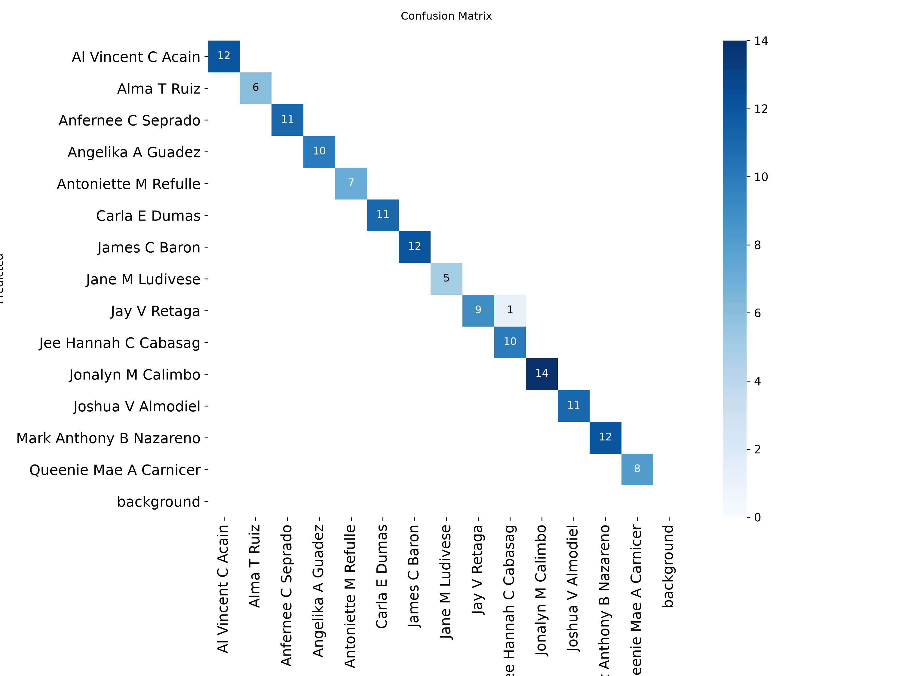
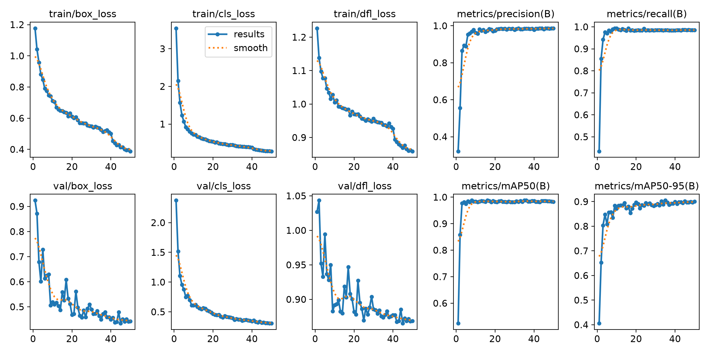

Eliminate proxy attendance and roll-call delays. A contactless biometric platform fusing YOLOv8 deep object detection, Google MediaPipe 3D spatial face tracking, and OpenCV LBPH with an executive desktop dashboard.
Click any figure to open the high-resolution diagnostic preview.

🔍 Click to ExpandUnified control center in Dark Espresso & Light Brown. Features real-time system metrics, 1-click action triggers, automated student registration with auto 20-photo capture, and interactive tabular record browser with compact refresh and CSV open tools.

🔍 Click to ExpandLive webcam tracking operating at 30+ FPS. Renders the light-brown geometric facial wireframe (open eye/mouth contours, zero dotted noise), verified HUD badges, and automatic CSV logging.

🔍 Click to ExpandReal-time diagnostic verification showing matched student roll number, name, and live Euclidean texture distance score (≤ 55 threshold).

🔍 Click to ExpandNormalized detection performance matrix demonstrating high precision across validation splits for student localization.

🔍 Click to ExpandComprehensive convergence curves across training epochs showing optimal loss stabilization and high mean average precision (mAP50).
High-performance multi-stage processing pipeline connecting real-time video capture to automated attendance persistence.
30 FPS Live Webcam frame capture via OpenCV
Haar Cascade & YOLOv8 Deep CNN detection
478 3D Landmarks & Local Binary Pattern Histograms
Distance threshold evaluation & geometric wireframe
Session duplicate filtering & attendance log persistence
Carefully selected technologies balancing cutting-edge Deep Learning accuracy with low-latency CPU inference.
Clone the repository, install dependencies, and run the Desktop GUI with just 3 commands.
# 1. Clone the repository
git clone https://github.com/gaganraok04/FaceAttend-AI-Real-Time-Automated-Attendance-System-with-3D-Face-Mesh-Deep-Learning.git
cd FaceAttend-AI-Real-Time-Automated-Attendance-System-with-3D-Face-Mesh-Deep-Learning
# 2. Install required Python packages
pip install -r requirements.txt
# 3. Launch the Executive Desktop GUI
python gui_app.py| Student ID | Student Name | Date | Time | Status |
|---|---|---|---|---|
| 101 | GAGAN RAO K | 2026-11-08 | 08:35:12 | ✓ Present |
| 909 | Ramesh | 2026-11-08 | 08:36:04 | ✓ Present |